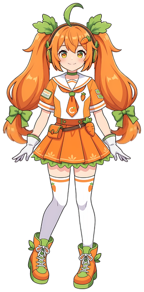
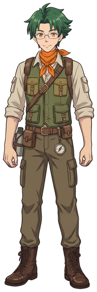
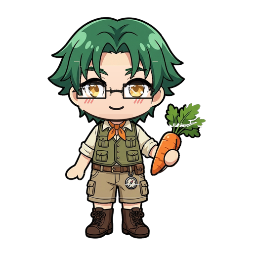

Spine 動畫
同一批角色做成 Spine 4.1 骨骼動畫：網格蒙皮、九軸轉頭、頭髮與裙擺的彈簧物理，用官方 Spine Web Player 即時播放。點卡片進入預覽器切換動作。

卡洛兒姐姐 v2
由 carol_v2.psd 重建：全部部件骨骼蒙皮、九軸轉頭、啊／喔口型、笑眼眨眼；揮手用五張原畫連續接過去（match cut），雙馬尾與裙擺彈簧物理。
開啟預覽器 →

卡洛特先生 V2
由 mr_carrot_v2.psd 建置（先清掉手臂背帶條、領巾殘邊、腰部碎塊、腿上指南針洞）：全部部件骨骼蒙皮、九軸轉頭 ±15°、眼鏡獨立深度；肩膀不動、只用手肘手腕；領巾與指南針彈簧物理。
開啟預覽器 →

Q版卡洛特先生
33 圖層探險家造型：大胡蘿蔔獨立道具骨骼、綠髮呆毛次級慣性、向外招手、彈跳與探險小碎步。
開啟預覽器 →